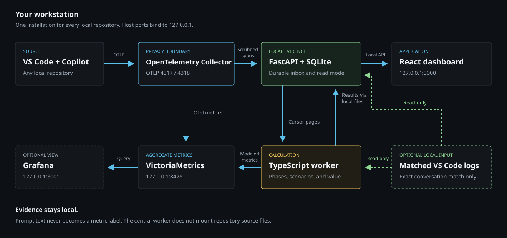

{kind=link}
Portfolio comparisons
Compare net value, break-even time, and delivery-cost reduction across Pessimistic, Base, Optimistic, and Custom scenarios.
GitHub Copilot / Local analysis
Your Copilot work, in perspective.
Understand AI costs, inspect your sessions, and compare modeled value. Your evidence stays on your workstation.
Start here
Works on Windows, macOS, and Linux. Start Docker and sign in to GitHub Copilot in VS Code before installing. No Node.js required.
Download the self-installing PYZ into the repository folder you want to use for Algalon. No extraction needed.
Open a terminal in that folder and run the command for your platform below.
Reload VS Code, start a new Copilot session, then open your local dashboard.
Replace <version> with the number in the downloaded filename.
python copilot-value-dashboard-<version>.pyzReplace <version> with the number in the downloaded filename.
python3 copilot-value-dashboard-<version>.pyzUnder the hood
One Docker Compose stack receives Copilot telemetry from all your local repositories. Algalon's collection, storage, and calculation stay on your workstation; GitHub Copilot still uses its normal online services.

VS Code sends OTLP to the OpenTelemetry Collector on 127.0.0.1:4317/4318. The Collector removes sensitive fields before forwarding traces to FastAPI.
FastAPI commits scrubbed spans to SQLite and deduplicates replays. A cursor lets the worker pick up new evidence, including late-arriving spans.
The TypeScript worker groups sessions, allocates engaged time by phase, and applies the scenario model. Results are stored in local files and indexed by FastAPI.
React reads FastAPI only, never VictoriaMetrics or raw trace archives. The worker also publishes aggregate metrics to VictoriaMetrics for optional Grafana views.
Local evidence, not a cloud service. Host ports bind to 127.0.0.1. Matched VS Code turn logs are optional read-only inputs; unmatched usage falls back to OTel. Prompt text can be retained locally, but never becomes a metric label.
Measured activity, modeled value. The worker never borrows source from the installation repository. Without matched retained-source evidence, coding benefit is zero. The methodology explains the assumptions and limits.
This website is static and never connects to your local dashboard. Component reference
A closer look
One local installation collects sessions across repositories. The dashboard keeps observed AI usage separate from the assumptions behind modeled value.

Compare net value, break-even time, and delivery-cost reduction across Pessimistic, Base, Optimistic, and Custom scenarios.
Inspect engaged time, models, tools, tokens, and AI credits. Elapsed duration stays visible without being mistaken for active work.
Review captured prompts and usage locally. Prompt-level ROI stays unavailable until its phase and retained-source evidence exists.
Twelve operational measurements highlight patterns worth investigating. Their thresholds are explicit triage defaults, not universal performance targets.
Save assumption sets, inspect supporting sources, and test sensitivity without changing observed evidence or the worker's published presets.
Export indexed sessions and prompts for your own analysis. Exports can contain sensitive prompt text and should remain private.

Behind the numbers
Costs and activity are observed. Time saved is modeled under explicit assumptions, not causal proof of productivity. Negative results and missing evidence remain visible.